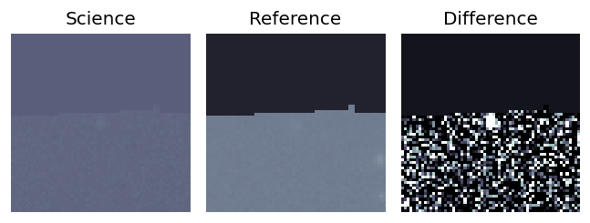
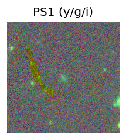
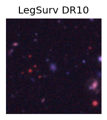
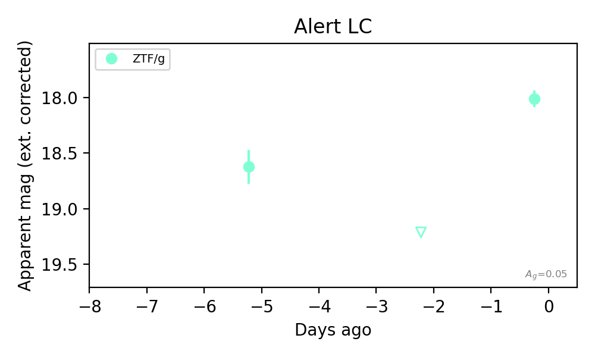
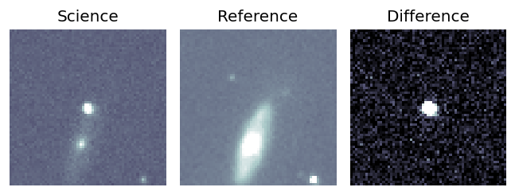
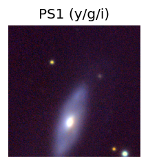
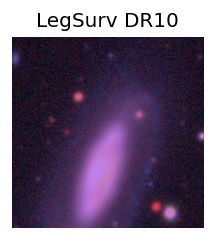
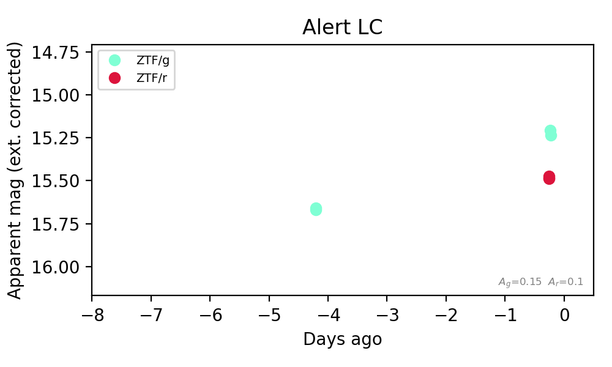

Candidate List 20260904Last night — ZTF: 2,957 passed basic cuts (190 young) · LSST: 0 passed basic cuts (0 young)Previous Day Next Day
Section 1: New Sources (age<1d) Section 2: Old (1-5d) sources observed last nightplaceholder
Section 1: New Afterglow/FBOT Cands Last Night (0)
Section 2: Older Sources Observed Last Night (5)
0. [ZTF] ZTF26abramlb (FBOT?) [NED transient: PSO J011.2292+41.5531 (V*, 8.5″) — reported, not trusted] [Back to Top] [Share] [Trigger Swift] [Fritz Alert] [Fritz Source] [Lasair]RA, Dec: 11.22607, 41.55293 0h44m54.26s, 41d33m10.53sGalactic (l, b): 121.62, -21.30218 ext(g-r) = 0.488


TESS: Sectors [17 57 84]
PS1: 1 source in 3 arcsec Closest: d = 1.09 arcsec photoz=0.16+/-0.03 peak abs mag = -25.58
LegacySurvey: 0 sources in 3 arcsec

Extinction-corrected gr color:
From alerts: -0.46 +/- 0.03 mag
Rise Rate:
g: 0.41 mag/day
r: 0.64 mag/day
Fade Rate:
1. [ZTF] ZTF26abrmdnv (FBOT?) [Back to Top] [Share] [Trigger Swift] [Fritz Alert] [Fritz Source] [Lasair]RA, Dec: 357.1566, 50.42315 23h48m37.58s, 50d25m23.33sGalactic (l, b): 112.80744, -11.20976 ext(g-r) = 0.196


TESS: Sectors [17 24 57 84]
PS1: 1 source in 3 arcsec Closest: d = 7.58 arcsec photoz=0.09+/-0.02 peak abs mag = -20.37
LegacySurvey: 0 sources in 3 arcsec

Extinction-corrected gr color:
From alerts: -0.2 +/- 0.08 mag
Rise Rate:
g: 0.37 mag/day
r: 0.33 mag/day
Fade Rate:
2. [ZTF] ZTF26abrpjdl (FBOT?) [Back to Top] [Share] [Trigger Swift] [Fritz Alert] [Fritz Source] [Lasair]RA, Dec: 320.11244, 2.17822 21h20m26.99s, 2d10m41.58sGalactic (l, b): 54.20305, -31.40075 ext(g-r) = 0.064


TESS: Sectors [55 82]
SDSS (<15 kpc):Found SDSS phot-z: z=0.10; peak abs mag = -20.04
PS1: 0 sources in 3 arcsec
LegacySurvey: 1 sources in 3 arcsec Closest: d = 2.83 arcsec, 322.0 deg (east of north) photoz=0.07 (68% bounds 0.05, 0.11), type=REX peak abs mag (ext. corrected) = -19.38 (68% bounds -18.34, -20.23)

Extinction-corrected gr color:
From alerts: -0.14 +/- 0.11 mag
Extinction-corrected gi color:
From alerts: -0.52 +/- 0.11 mag
Extinction-corrected ri color:
From alerts: -0.38 +/- 0.1 mag
Rise Rate:
g: 0.39 mag/day
r: 0.39 mag/day
i: 0.4 mag/day
Fade Rate:
3. [ZTF] ZTF26abrgfyd (FBOT?) [Back to Top] [Share] [Trigger Swift] [Fritz Alert] [Fritz Source] [Lasair]RA, Dec: 19.61863, -27.09649 1h18m28.47s, -27d-5m-47.35sGalactic (l, b): 214.17139, -83.98422 ext(g-r) = 0.017


TESS: Sectors [ 3 30 97 107]
PS1: 0 sources in 3 arcsec
LegacySurvey: 1 sources in 3 arcsec Closest: d = 0.96 arcsec, 155.9 deg (east of north) photoz=0.16 (68% bounds 0.11, 0.21), type=SER peak abs mag (ext. corrected) = -21.48 (68% bounds -20.68, -22.11)

Rise Rate:
g: 0.61 mag/day
Fade Rate:
g: 0.2 mag/day
4. [ZTF] ZTF26abrlroj (FBOT?) [Back to Top] [Share] [Trigger Swift] [Fritz Alert] [Fritz Source] [Lasair]RA, Dec: 5.46242, -9.48822 0h21m50.98s, -9d-29m-17.58sGalactic (l, b): 99.94148, -71.02733 ext(g-r) = 0.048


TESS: Sectors [ 3 42 70]
PS1: 1 source in 3 arcsec Closest: d = 3.10 arcsec photoz=0.09+/-0.01 peak abs mag = -22.99
LegacySurvey: 0 sources in 3 arcsec

Extinction-corrected gr color:
From alerts: -0.26 +/- 0.02 mag
Rise Rate:
g: 0.19 mag/day
r: 0.29 mag/day
Fade Rate: